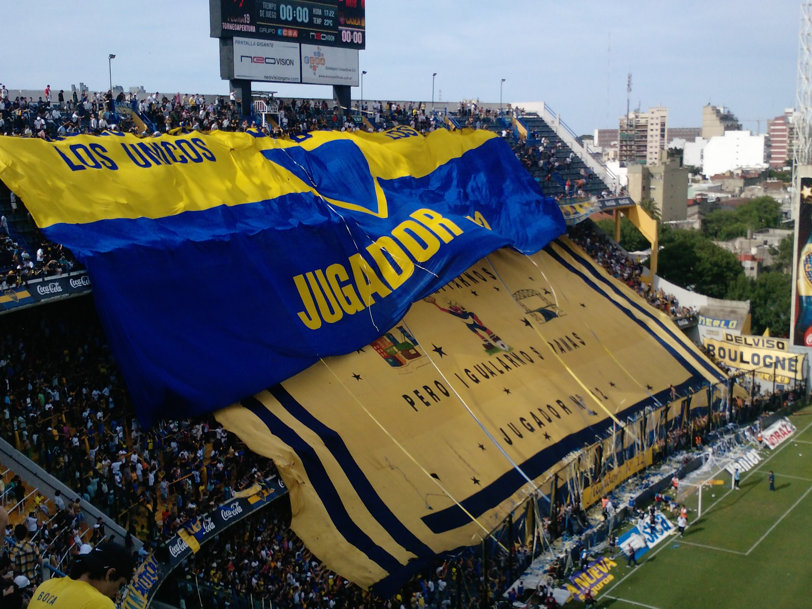
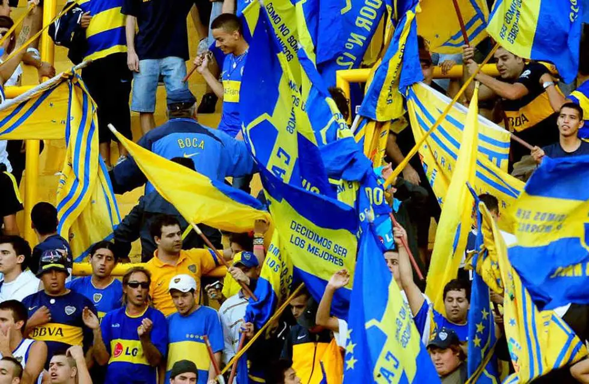
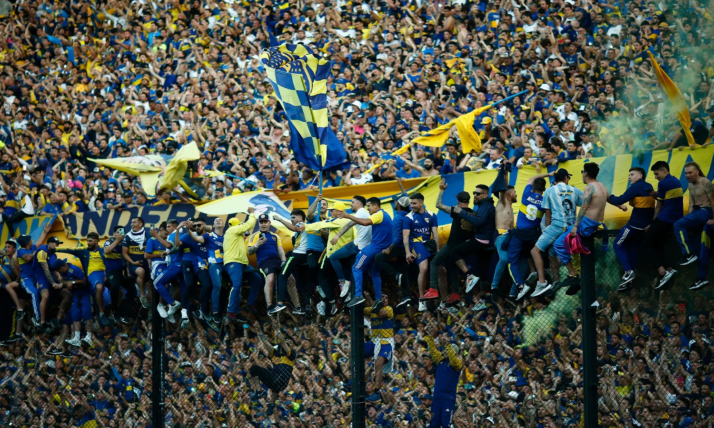

Jugador N° 12
La barra de Boca
Jugador Número 12, conocida simplemente como La 12, es el nombre de la barra brava del equipo de fútbol Club Atlético Boca Juniors fundada a fines de la década de 1960 por Enrique Ocampo. La agrupación e hinchada se presenta desde la década del 70 en el Estadio Alberto J. Armando en cada encuentro futbolístico de Boca Juniors, junto a sus banderas y su percusión. Su principal rival son los Borrachos del Tablón, del Club Atlético River Plate, su clásico rival. Aunque también tiene discrepancias históricas con la Guardia Imperial, la Barra del Rojo y la Gloriosa Butteler, de Racing, Independiente y San Lorenzo respectivamente.
El origen de su nombre se debe a la historia que data del año 1925 en donde Boca Juniors realizó la primera gira de su historia y del fútbol argentino. En ella junto con los jugadores y cuerpo técnico viajó un hincha destacado al cual se lo denominó el Primer Jugador Número Doce reconocido como Victoriano Caffarena. Un año más tarde, Caffarena, le encargo al cantor y compositor Ítalo Goyeneche un himno para Boca, más tarde, Victoriano sería la representación del hincha de Boca hasta convertirse en socio vitalicio. En 1955, Alberto J. Armando, le entregó a Caffarena una plaqueta que lo reconocía como el Jugador Número 12.
EL PRESENTE DE LA 12
Tras desapariciones por juicios y otras causas, los jefes de la doce en los intervalos del 2007 al 2014, Rafael Di Zeo y Mauro Martin, reaparecieron visiblemente en el año 2022 en Colombia, en el duelo de Boca Juniors frente al Deportivo Cali por la Copa Libertadores 2022.22 El 20 de enero de 2023, Mauro Martin y Di Zeo volvieron a ser partícipes y comandantes en conjunto de la barra en el partido de Boca Juniors frente a Racing Club en Abu Dabi. El 9 de abril del 2023, después de 6 años en los que no pudieron entrar a La Bombonera porque sobre ellos caía el derecho de admisión, Di Zeo y Martín volvieron a la segunda bandeja de la popular norte en el partido frente a Colón (SF). El 2 de noviembre de ese mismo año, en el marco de la final de la Copa Libertadores 2023 entre Boca y Fluminense, se produjeron incidentes en Río de Janeiro donde hinchas de Fluminense emboscaron a simpatizantes de Boca, debido a esto la Barra de Boca que todavía no había arribado a Brasil, comandada por Di Zeo, Mauro Martin y Marcelo 'Manco' Aravena pidió enfrentarse (según audios de este último) con la Barra de Fluminense. Finalmente la disputa no sucedió ya que se pacto entre las dos hinchadas la no agresión.